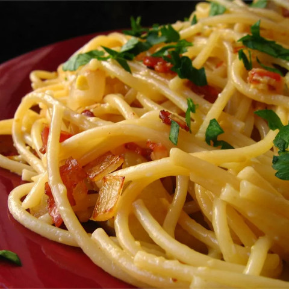

Spaghetti Carbonara

Carbonara is a decadent Itailan pasta dish made with egg,
Pecorino Romano and Parmigiano-Reggiano cheese, cured pork, and black pepper.
The egg is added in at the end, lending this dish its heavenly creaminess,
while the bacon and cheese give the dish its savory kick.
Ingredients:
2 tablespoons olive oil, divided or as needed
1/2 cup grated Parmesan cheese
salt and black peppper to taste
2 tablespoons chopped fresh parsley
2 tablespoons grated Parmesan cheese
Directions
Step 1
Bring a large pot of lightly salted water to a boil.
Cook spaghetti in boiling water, stirring occasionally,
until tender yet firm to the bite, about 12 minutes.
Step 2
Place diced bacon in a large skillet over medium heat;
cook and stir until evenly browned, about 10 minutes.
Drain bacon on paper towels, reserving 2 tablespoons
bacon fat in the skillet.
Step 3
Add 1 tablespoon olive oil to bacon fat in the skillet.
Add chopped onion and cook over medium heat until onion
is translucent. Add minced garlic and cook until fragrant,
about 1 minute. Add wine and cook 1 minute more.
Step 4
Return cooked bacon to the skillet; add cooked spaghetti.
Toss to coat and heat through, adding more oil if it seems
dry or sticks together. Add beaten eggs and cook, tossing
constatly with tongs or a large fork, until eggs are barely
set. Quickly add 1/2 cup Parmesan cheese and toss again.
Seasn with salt and pepper (remember that bacon and Parmesan
are very salty).
Step 5
Serve warm with chopped parsley sprinkled on top and extra
Parmesan cheese at the table.